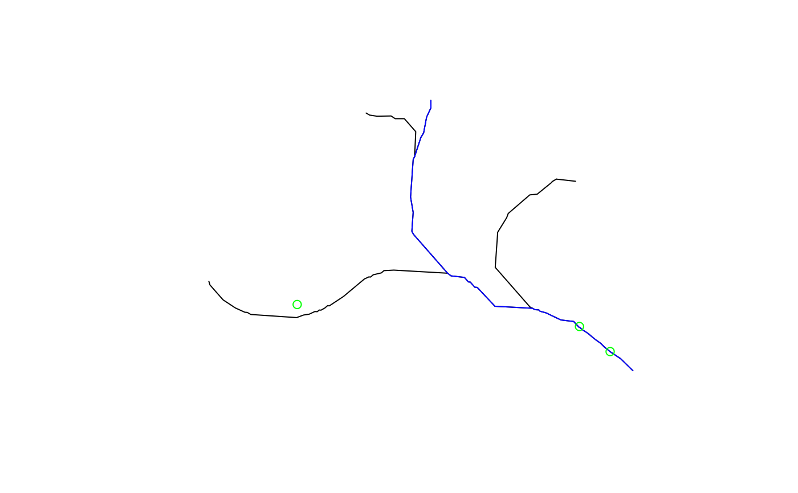

Navigate the Network Linked Data Index network.
navigate_nldi(
nldi_feature,
mode = "upstreamMain",
data_source = "flowlines",
distance_km = 10
)list with names `featureSource` and `featureID` where `featureSource` is derived from the "source" column of the response of dataRetrieval::get_nldi_sources() and the `featureID` is a known identifier from the specified `featureSource`.
character chosen from ("UM", "UT", DM", "DD"). See examples.
character chosen from "source" column of the response of dataRetrieval::get_nldi_sources() or empty string for flowline geometry.
numeric distance in km to stop navigating.
sf data.frame with result
# \donttest{
library(sf)
library(dplyr)
nldi_nwis <- list(featureSource = "nwissite", featureID = "USGS-05428500")
navigate_nldi(nldi_feature = nldi_nwis,
mode = "upstreamTributaries")$UT %>%
st_geometry() %>%
plot()
navigate_nldi(nldi_feature = nldi_nwis,
mode = "UM")$UM %>%
st_geometry() %>%
plot(col = "blue", add = TRUE)
nwissite <- navigate_nldi(nldi_feature = nldi_nwis,
mode = "UT",
data_source = "nwissite")$UT_nwissite
st_geometry(nwissite) %>%
plot(col = "green", add = TRUE)

nwissite
#> Simple feature collection with 4 features and 8 fields
#> Geometry type: POINT
#> Dimension: XY
#> Bounding box: xmin: -89.45556 ymin: 43.08944 xmax: -89.36083 ymax: 43.14083
#> Geodetic CRS: WGS 84
#> # A tibble: 4 × 9
#> sourceName identifier comid measure reach…¹ name X Y
#> <chr> <chr> <chr> <dbl> <chr> <chr> <dbl> <dbl>
#> 1 NWIS Surface Water Sites USGS-05428000 1329… 1.37 070900… LAKE… -89.4 43.1
#> 2 NWIS Surface Water Sites USGS-05428500 1329… 42.9 070900… YAHA… -89.4 43.1
#> 3 NWIS Surface Water Sites USGS-05427905 1329… 86.8 070900… SIXM… -89.4 43.1
#> 4 NWIS Surface Water Sites USGS-4306000… 1329… 59.3 070900… LAKE… -89.5 43.1
#> # … with 1 more variable: geometry <POINT [°]>, and abbreviated variable name
#> # ¹reachcode
# }